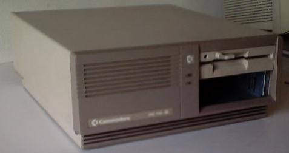

I acquired this computer in an interchange marked, where I changed a juice-machine for this pretty good computer.
It came with all options: Green Hercules monitor, and a mechanic IBM keyboard.
| Address | UART | Speed | Format | IRQ | |
|---|---|---|---|---|---|
| COM1 | 03F8 | 8250 | 2400 | 8N1 | 4 |
| Address | IRQ | |
|---|---|---|
| LPT1 | 0378 |
| Voltage | Current | |
|---|---|---|
| INPUT | 240V AC 50Hz | 0.8A |
| INPUT | 120V AC 60Hz | 1.6A |
| OUTPUT | +5V DC | 5.8A |
| OUTPUT | +12V DC | 3.5A |
| OUTPUT | -12V DC | 0.3A |
There are many jumpers in the mainboard, but I don't know at all what do they set up. If anyone knows, please write me.
This computer has some specific software (look for speed.exe in details). I'll soon put it here for download (I actually don't have any other acces to my box than through serial line)
These files can give more detailed information about the computer and its configuration, and also some benchmarking.
It doesn't have CMOS.
It has only one IRQ controller (IRQs from 0 to 7).
It reports the RTC port (02C0h) at the boot process.
The system runs at 2.2MHz (benchmarked) by default. This is the normal system speed. Anyway, you can change this system speed using this program: speed.exe (see Files). It lets you choose between these modes:
A copy of the MS-DOS 3.20 can be found in the Old Software page.
I've used a 1200 baud internal modem with this computer, and it worked perfectly.
At the time of doing the tests and getting information about the computer (i.e. Snooper's log), it hadn't the B: floppy drive. I had used it in some other computers, in order to get access to 5 1/4" 360Kb floppy disks. This was the first 5 1/4" FD I had.
Torsten Urban has told me that the computer had its own keyboard. It had keys for setting the speed of the computer. I used the utility SPEED.EXE for setting the speed... He says the keys sent special character sequences, but he can't remember which ones. I saw some 486 computers that used the combination CONTROL-ALT-KEYPADPLUS and CONTROL-ALT-KEYPADMINUS. I haven't tested those key combinations in my Commodore.
Started 04/08/2001 / Updated 2003-03-03 11:11:19.000000000 +0100
[top] [home] [Software utilities]
Viric's Web Site / Webmaster: viric / Started 03/08/2001 / Updated mié sep 17 01:30:41 CEST 2003{kind=link}
{kind=link}